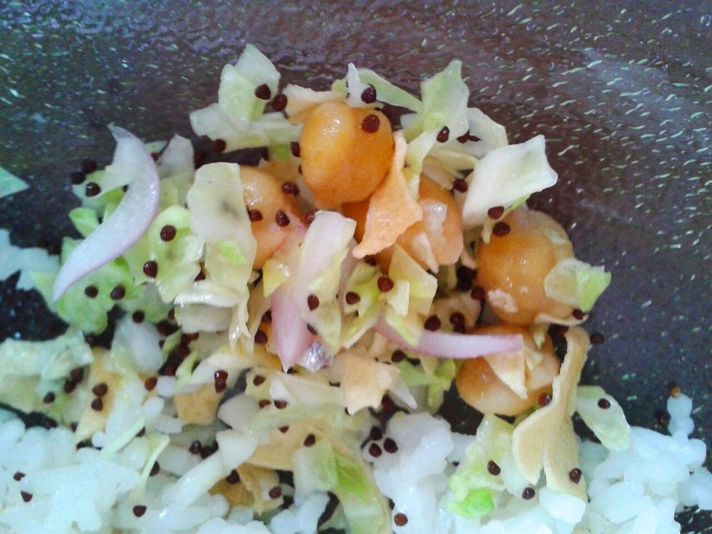

Ooti
Manipuri dried peas simmered soft with bamboo shoot and finished with burnt chilli oil

Contains: mustard
Checked against the ingredient list for milk, egg, fish, crustaceans, tree nuts, peanuts, sesame, mustard, soy and gluten. Nothing else is checked, and brands vary, so read the label on anything you have not bought before.
Ingredients
Quantities for 4.
- 200g whole dried green peas Dried Peas
- 1/2 tsp Baking Sodastands in for kaanjeer, the ash-filtered water Manipuri kitchens use; it does the same job of collapsing the peas
- 150g, sliced thin Bamboo Shootfermented soibum if you can find it, otherwise fresh boiled shoot
- 4, chopped, whites and greens kept separate Spring Onion
- 3, slit Green Chilli
- 3 tbsp Mustard Oil
- 3, broken Dried Red Chilli
- 1.2 litres Water
- to taste Salt
- 3 tbsp, chopped Coriander Leavesoptional
Cookware
stovetop, pressure cooker
Before you start
- Soak the dried peas in plenty of cold water for at least 8 hours, or overnight. They will roughly double.
- If your bamboo shoot is fresh rather than fermented, boil it in a change of water for 10 minutes first to take off the bitterness.
- The soda goes in at the start with cold water, never into a hot pan.
Method
- Drain the soaked peas and pressure cook them with 800ml of the water, the baking soda and 1 tsp salt, 5 whistles, or about 20 minutes at pressure.
- Let the pressure drop on its own, open up, and crush about a quarter of the peas against the side of the pan.This is what gives ooti its body. Do not blend it. You want soft whole peas suspended in a thick liquor.
- Add the bamboo shoot and the remaining 400ml water and simmer uncovered for 15 minutes. The sourness sharpens as it reduces.
- Stir in the spring onion whites and the green chillies and simmer another 10 minutes, until the stew coats the back of a spoon.
- Check the consistency: it should pour thickly, not sit in a mound. Loosen with hot water if it has gone too far.
- In a small pan heat the mustard oil until it smokes, take it off the heat for 20 seconds, then drop in the dried red chillies for 20 seconds until they darken and smell toasty.Chillies go from toasted to acrid in about ten seconds. Have the pan of ooti right beside you.
- Pour the chilli oil over the ooti and stir it through once, leaving streaks.
- Scatter the spring onion greens and coriander, rest 5 minutes off the heat, and serve with rice.
Storage
Keeps 3 days refrigerated and thickens considerably as it sits. Reheat with a good splash of water and re-check the salt. Make the chilli oil fresh each time.
Nutrition Medium estimate
| Per serving128 g | Per 100 g | |
|---|---|---|
| Calories | 294+ kcal | 230+ kcal |
| Protein | 13.1+ g | 10+ g |
| Carbohydrate | 34.6+ g | 27+ g |
| of which sugars | 3.3+ g | 3+ g |
| Fibre | 12.7+ g | 10+ g |
| Fat | 12.7+ g | 10+ g |
| of which saturated | 1.5+ g | 1+ g |
| of which unsaturated | 9.4+ g | 7+ g |
The + means ingredients given to taste rather than by weight are counted as zero, so the true figure is a little higher than shown. Worked out from the listed quantities. Some of the ingredient list is given to taste rather than by weight, so treat these as a guide. Ingredients given to taste rather than by weight are counted as zero, so the real figure is a little higher than this. The + says so. Estimated from raw ingredients using USDA FoodData Central. Cooking changes are not modelled, and added salt is excluded, so sodium is not given.
Written and checked against sources, not cooked in a test kitchen. Times, yields and keeping times are guides, and the allergen and nutrition figures are worked out from the ingredient list rather than measured. Use your own judgement, particularly on doneness and on anything you are storing or reheating. More in About.